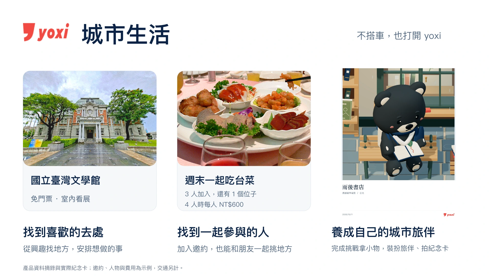

跳到內容
yoxi
團隊資料
最新提案
Demo 影片
會議與官方資料
下載
首頁
初賽簡報
產品整合新版 · 2026.10.12
下載 PDF
下載 PPTX
講稿
上一頁
選擇簡報頁面
摘要：提案摘要
正文 1：yoxi 城市生活
正文 2：三種打開 yoxi 的時刻
正文 3：想去的地方，也能約人一起去、留下紀念
正文 4：照著自己的興趣，找到想親自體驗的地方
正文 5：想吃一桌合菜，先找到一起去的人
正文 6：和旅伴玩紙鳥，收下能帶在身上的小物
正文 7：換個光線、換個姿勢，留下自己的城市收藏
正文 8：我想拍照、朋友想看展，AI 幫我們一起安排
正文 9：共同安排中的 AI、資料與規則
正文 10：同一份興趣與地點，接著探索、邀約、留下紀念
正文 11：探索與邀約，帶來交通與地方合作的機會
正文 12：先用一座城市，驗證內容、活動和再次使用
正文 13：從現有原型補強到首批試用，需要多少資源
正文 14：有人想用、願意再用，也真的成行嗎
正文 15：今天不搭車，也有打開 yoxi 的理由
附錄 1：完整展示：從三個入口，看到各自的用途
附錄 2：想去清單與安排：保留想做的事，再選內容
附錄 3：邀約會變動，費用與參加意願一起確認
附錄 4：交通與互動：共同參加，也能各自前往
附錄 5：遊戲的收穫：取得小物，再帶進自己的紀念
附錄 6：個人紀念：同一地方，保留不同的體驗
附錄 7：模型理解語句，規則核對時間、費用與權限
附錄 8：官方資料用來決定在哪裡、何時提供內容
附錄 9：共同安排實例：只改朋友的時間，仍保留原意
附錄 10：首批地區要能到場，活動要有人負責
附錄 11：每月成本會隨使用量與維護工作改變
附錄 12：收入要看新增的交易，以及每筆留下多少
附錄 13：首批試用的 329 小時，主要花在哪裡
附錄 14：正式服務還要補上跨裝置與多人共同狀態
附錄 15：試用先分清楚：看懂、想用，以及真的回來
附錄 16：地方收藏如何和真實活動一起運作
附錄 17：把後續功能接回三個體驗，保留各自的好處
附錄 18：官方條件與地方資訊的來源
附錄 19：服務比較與雲端估價的依據
附錄 20：照片與產品畫面的來源
下一頁
簡報載入失敗。請重新整理，或
開啟 PDF
。

正文 1：yoxi 城市生活
本頁文字與講稿
講稿
開啟完整 PDF
，或
閱讀逐頁講稿
。
Demo 影片
複製這頁連結
開啟 PDF